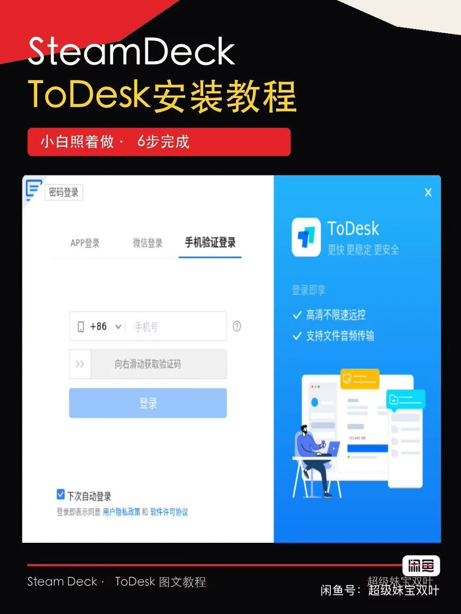
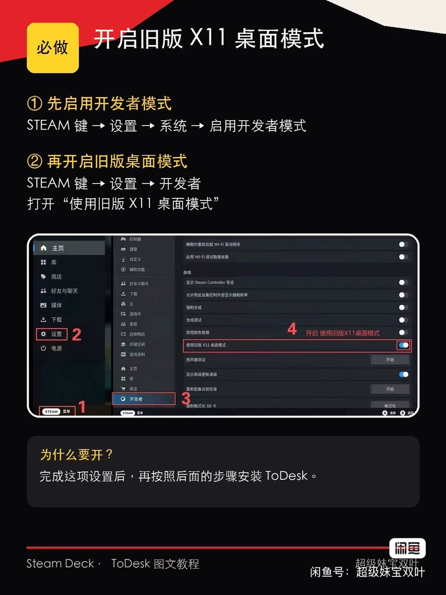
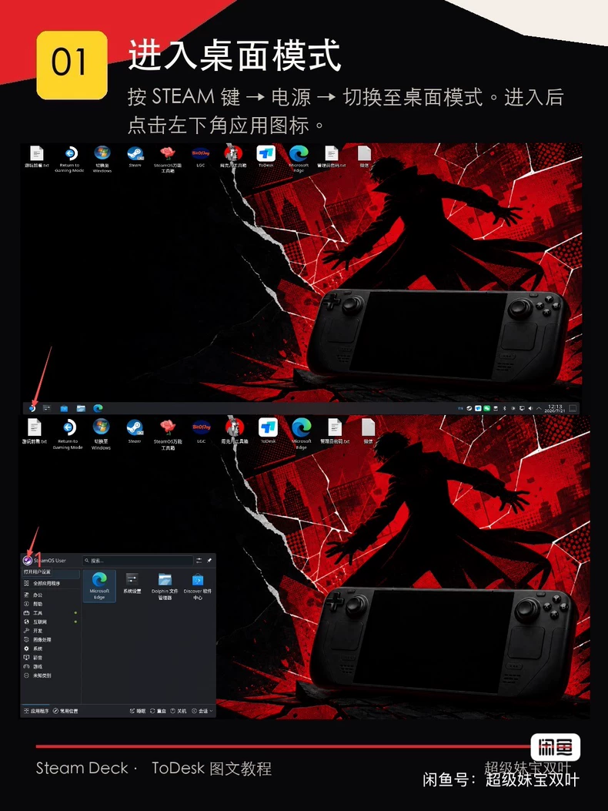
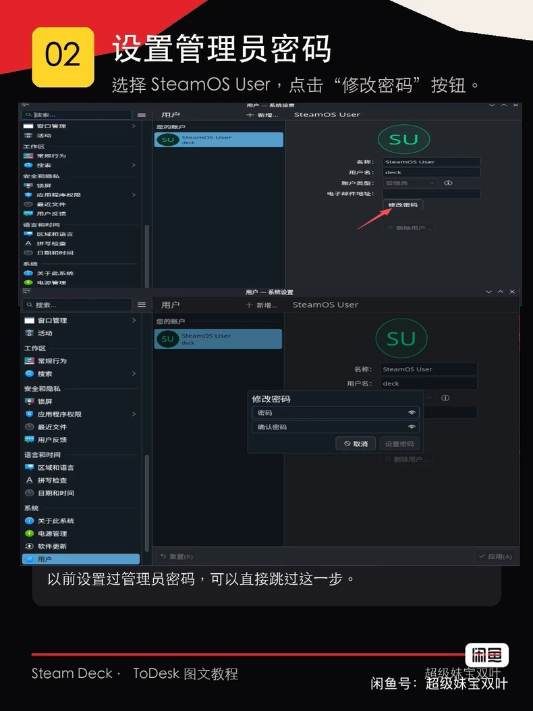
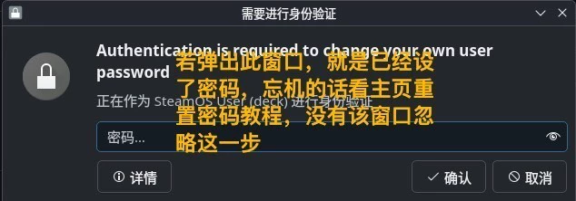
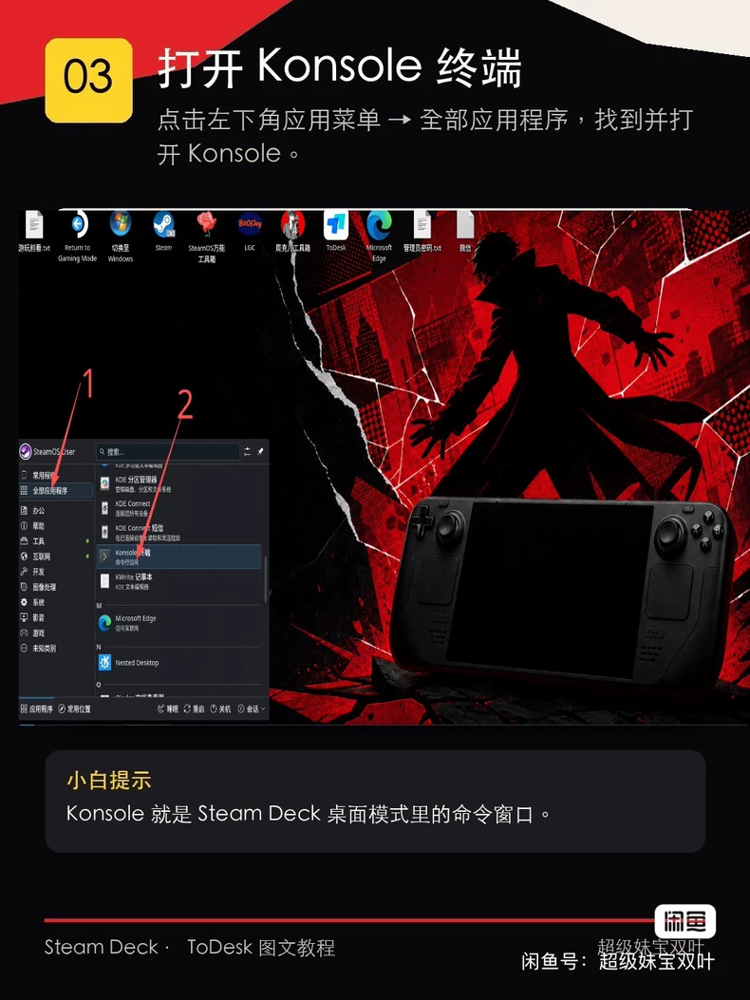
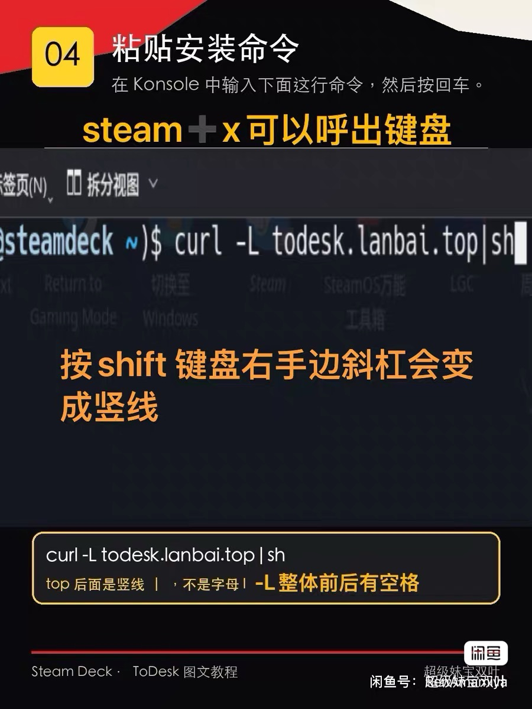
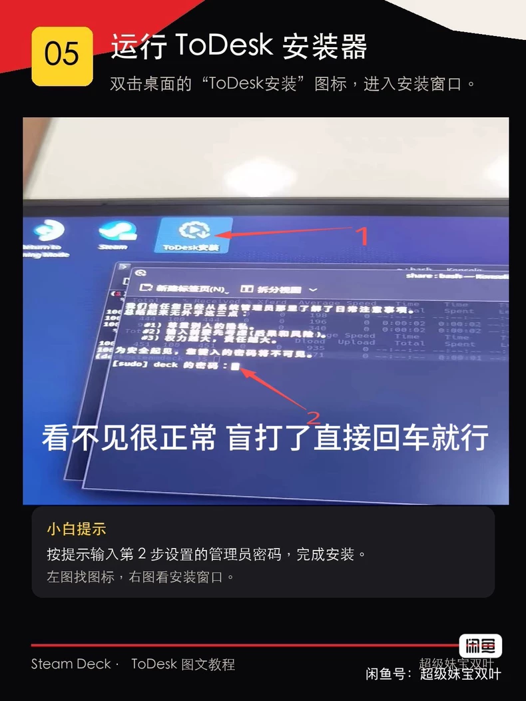
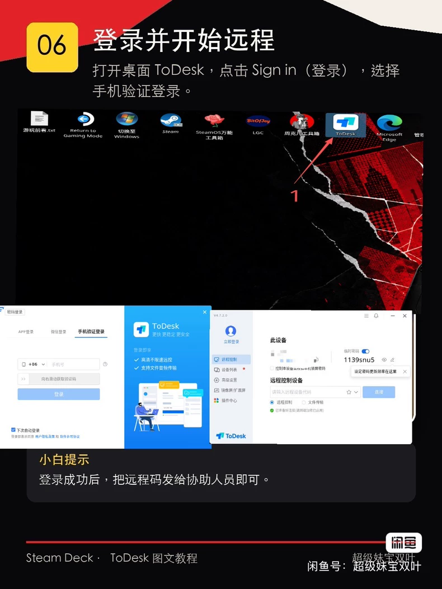

准备
开启旧版 X11 桌面模式

在游戏模式依次进入 Steam 键 → 设置 → 系统，开启开发者模式；再进入“开发者”页面，开启“使用旧版 X11 桌面模式”。完成后重新进入桌面模式。
01
进入桌面模式

02
设置管理员密码

打开系统设置 → 用户，选择 SteamOS User 后设置密码。若系统弹出验证窗口，说明以前已设置过密码，可直接跳过设置步骤。

03
打开 Konsole 终端

04
粘贴安装命令

输入提示：按 Steam + X 呼出键盘；命令中的竖线是
|，不是字母 I 或 L，且前后都有空格。该方式会运行第三方在线安装脚本，继续前请确认你理解并信任其来源。05
运行 ToDesk 安装器

双击桌面的“ToDesk安装”图标；系统要求管理员密码时，终端不会显示输入的字符，这是正常现象。安装完成后，桌面会出现 ToDesk 图标。
06
登录并开始远程协助

打开 ToDesk，选择手机验证登录。需要远程协助时，只把设备代码发给你信任的协助人员；不向陌生人提供验证码或账号密码。
备用方法：若命令下载失败、安装器无法运行，或 SteamOS 更新后需要重装，可使用周克儿工具箱的“常用软件 → 远程协助 → ToDesk”入口再试一次。